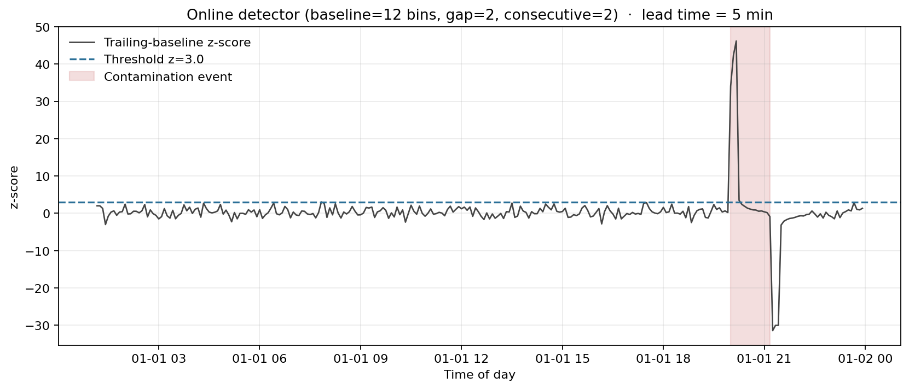
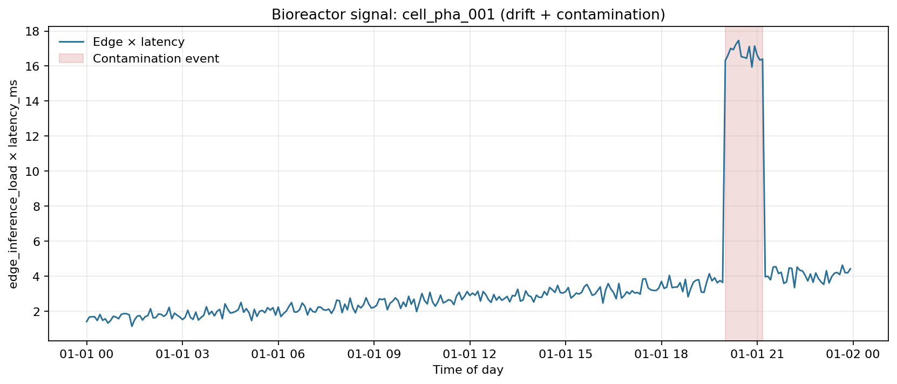
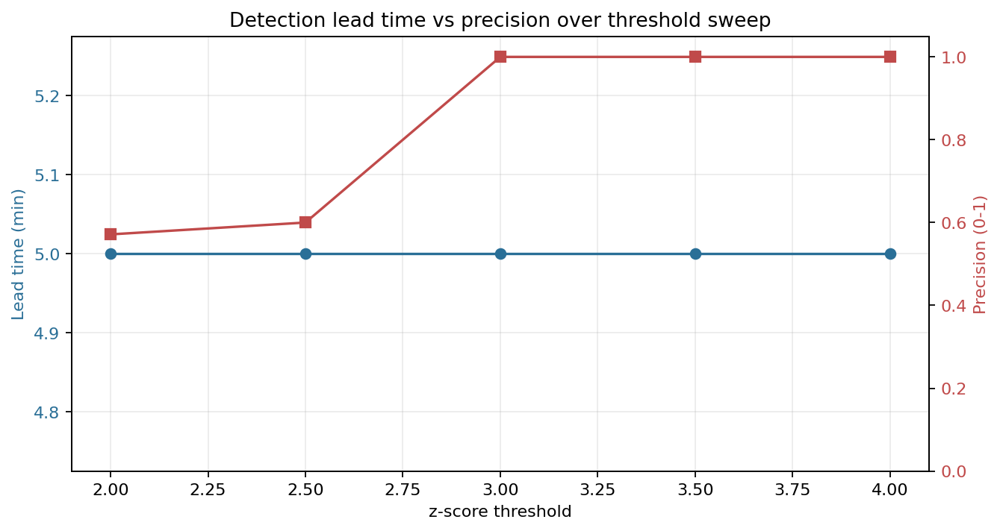

Decision
100 AGVs
Safe simulated capacity at the 20 ms p95 budget.
| Recommended simulated fleet ceiling | 100 AGVs |
|---|---|
| First tested unsafe expansion point | 120 AGVs |
| Binding bottleneck | Assembly-zone edge GPU saturation appears first in this seeded simulation. |
| Primary metric | worst-cell hourly p95 latency |
| Control-loop budget | 20 ms p95 |
| Decision basis | seeded simulation + generated plots + budget sensitivity + multi-seed stability |
| Operator recommendation | Cap expansion at 100 AGVs until live telemetry validates headroom. |
A factory can add AGVs and still see healthy-looking private 5G metrics while edge inference latency quietly becomes the real constraint.
I built a reproducible telemetry-intelligence pipeline that joins private-5G-style KPIs, AGV fleet load, edge GPU pressure, schema validation, quarantine handling, deterministic simulation, benchmarks, and a static decision dashboard.
The simulated floor stayed under the 20 ms p95 budget through 100 AGVs. At 120 AGVs, the budget broke. Assembly-zone edge GPU saturation appeared first.
I would cap expansion at 100 AGVs, rebalance assembly-zone workload, reserve edge GPU capacity before testing 120 AGVs, and validate with live RAN, GPU, and factory telemetry before any real deployment decision.
| Candidate | Finding | Evidence | Decision implication |
|---|---|---|---|
| Edge GPU pool | Assembly-zone edge GPU saturation appears first in the seeded simulation. | Assembly zone hits the saturation knee first and carries 42% of the fleet. | Reserve or add edge GPU capacity before testing 120 AGVs. |
| Radio / private 5G layer | Not shown as the first bottleneck in this seeded simulation. | The latency break is tied to edge GPU pressure and worst-cell p95 behavior, not a proven radio-only failure. | Do not assume radio-capacity spend is the first fix. |
| Zone-level fleet distribution | Assembly carries the heaviest load. | 42% assembly, 34% paint, 24% warehouse. | Rebalance routing or workload before expanding fleet size. |
| Worst-cell latency budget | 100 AGVs remains under the 20 ms p95 budget, while 120 AGVs crosses it. | 18.39 ms at 100 AGVs and 23.40 ms at 120 AGVs. | Keep the simulated ceiling at 100 AGVs until validated. |
| Data pipeline health | Evidence path is reproducible and tested. | Schema validation, quarantine path, benchmarks, deterministic regeneration, tests/CI. | The analysis is reproducible, but it is still not live production telemetry. |
| Action | Priority | Why | Evidence | Boundary |
|---|---|---|---|---|
| Cap expansion at 100 AGVs | P0 | Last tested fleet size under the 20 ms p95 budget. | 100 AGVs = 18.39 ms p95. | Seeded simulation, not production approval. |
| Validate with live RAN + edge GPU telemetry | P0 | Current evidence is generated from seeded scenarios. | Boundary section and readiness checklist. | Required before any real deployment decision. |
| Rebalance assembly-zone AGV routing/load | P1 | Assembly zone carries the heaviest load and saturates first. | 42% assembly fleet share. | Validate against real routing and factory layout. |
| Reserve or add edge GPU capacity before testing 120 AGVs | P1 | Edge inference pool appears to be the limiting layer. | 120 AGVs crosses 23.40 ms p95. | Confirm with live GPU utilization and queueing telemetry. |
| Re-run scenario at 15 ms, 20 ms, and 25 ms budgets | P1 | Control-loop deadline changes the allowable fleet size. | 15 ms = 80 AGVs, 20 ms = 100 AGVs, 25 ms = 120 AGVs | Budget choice must come from actual control-loop requirements. |
| Seeded simulation | PASS |
|---|---|
| Deterministic regeneration | PASS |
| Schema validation | PASS |
| Quarantine path tested | PASS |
| Benchmark artifacts | PASS |
| Live private 5G telemetry | NOT IMPLEMENTED |
| Vendor RAN integration | NOT CLAIMED |
| MES/SCADA/PLC integration | NOT IMPLEMENTED |
| Safety certification | NOT CLAIMED |
| Production deployment | NOT CLAIMED |
A factory floor running edge-AI vision on AGVs over private 5G. Ops wants to grow the fleet. The radio isn't the bottleneck — the edge GPU pool feeding inference to the AGV cameras is. I swept fleet size from 20 to 160 AGVs across three URLLC cells (assembly, paint, warehouse) and watched worst-cell hourly p95 latency.


| Fleet | Worst-cell p95 (ms) | Mean p95 (ms) | Mean edge load | Budget |
|---|---|---|---|---|
| 20 | 7.62 | 7.08 | 0.27 | ok |
| 40 | 7.53 | 7.28 | 0.34 | ok |
| 60 | 9.29 | 8.10 | 0.40 | ok |
| 80 | 14.56 | 10.67 | 0.46 | ok |
| 100 | 18.39 | 14.17 | 0.52 | ok |
| 120 | 23.40 | 18.47 | 0.60 | over |
| 140 | 27.78 | 22.18 | 0.67 | over |
| 160 | 31.51 | 24.82 | 0.73 | over |
| Latency budget | Max fleet |
|---|---|
| 15 ms | 80 AGVs |
| 20 ms | 100 AGVs |
| 25 ms | 120 AGVs |
To show the pipeline isn't single-use, I pointed it at a non-manufacturing vertical: a pharma cleanroom bioreactor with slow sensor drift through the shift and one ~75-minute contamination event injected late in the day. The detector is an online z-score on the edge-load × latency signal, using a trailing 1-hour baseline with a 10-minute gap before the test sample.



| z-threshold | Detected | Lead time | TP windows | FP windows | Precision |
|---|---|---|---|---|---|
| 2.0 | yes | 5 min | 4 | 3 | 0.57 |
| 2.5 | yes | 5 min | 3 | 2 | 0.60 |
| 3.0 | yes | 5 min | 3 | 0 | 1.00 |
| 3.5 | yes | 5 min | 2 | 0 | 1.00 |
| 4.0 | yes | 5 min | 2 | 0 | 1.00 |
| Seed | Detected | Lead time | Precision |
|---|---|---|---|
| 42 | yes | 5 min | 1.00 |
| 7 | yes | 5 min | 1.00 |
| 17 | yes | 5 min | 1.00 |
| 99 | yes | 5 min | 1.00 |
This isn't an inference workload, so FPS and GPU utilisation would be staged. The benchmarks that are meaningful for a telemetry-intelligence layer: ingest throughput, schema-quarantine throughput under corrupted input, end-to-end regeneration wall-clock, and determinism. All measured.
Every number on this page comes from a seeded simulation. I didn't connect to a live private 5G network, vendor RAN, vendor edge-AI platform, MES, SCADA, PLC, or a real AGV fleet. What's portable is the shape — the schema, the scenario pattern, the way each answer comes with its sensitivity story attached.